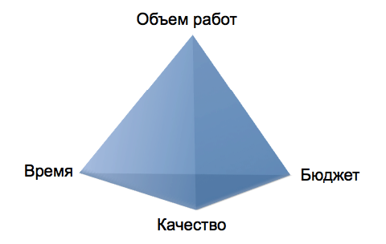

Анекдот менеджера проекта:
Мы делаем быстро, качественно и недорого. Выберите два.
Проблема с этим анекдотом в том, что менеджер проекта взял и бесспорно зафиксировал 4-ю размерность: объем работ. Но, ведь, объем работ — это тоже предмет торга! И еще какой!
Гибкая методология разработки ПО учит нас: «Фиксируйте время и бюджет. Варьируйте объем работ». И в этой формуле нет «качества», потому что качество не должно быть предметом торга.
Не должно. Но может.
И на практике мы видим, что такое довольно часто (чтобы не сказать постоянно) происходит: менеджмент, руководство, договорились с заказчиками о каком-то объеме работ, что-то кому-то пообещали — и теперь считают это чем-то, что зафиксировано, что не меняется. Бюджет и время вам, конечно, никто не увеличивает. И получается, что единственное, чем вам остается варьировать в такой ситуации — это качество.
В какой-то момент вы можете почувствовать, что обеспечить требуемый уровень качества в данных условиях вы не в состоянии. И поэтому вы можете начать приходить на работу пораньше, задерживаться на работе подольше, забывать поесть, доделывать работу на выходных, и т.д. — т.е. начинаете добавлять время. Свое личное время. Самое дорогое, что у вас есть. А к нему на весы вы добавляете и ваше здоровье — второе самое дорогое, что у вас есть. Вы можете начать жертвовать собой, своими интересами, своими ресурсами. Но почему?
Да, иногда жертва личным временем оправдана. Например, когда «продакшен в огне», когда что-то пошло совсем не так, и нужно все срочно спасать. Но такая ситуация в нормальной системе возникает раз в несколько лет. Если вам приходится играть в спасателей постоянно или гораздо чаще, чем раз в несколько лет, то что-то идет не так.
В такой ситуации необходимо вернуть «объем работ» назад в уравнение и убрать оттуда «качество». Переписать анекдот, если хотите:
Мы делаем быстро и недорого тот объем работ, о котором мы договорились. Выберите два.
Или совсем без шуток, зато профессионально и конструктивно:
Мы делаем быстро и недорого из того объема работ о котором мы договорились. Пожалуйста, приоритезируйте объем работ.
Такой подход все расставляет на свои места: вы начинаете работу вовремя, заканчиваете ее вовремя, делаете столько, сколько вы можете и с необходимым уровнем качества, не забываете поесть, легко уходите в отпуск, и, в целом, чувствуете себя очень комфортно. И так и должно быть, потому что это работа для людей, а не люди для работы.
Но это уже тема другой главы.